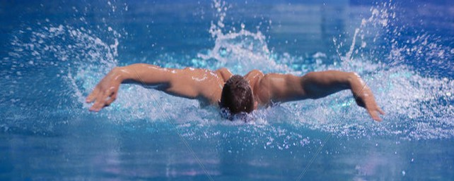

運動感
乒乓球、游泳、籃球讓身體保持節奏，也訓練反應和專注。

A. MY STRENGTH
原 PPT 的「特長」被重組成三個清楚模塊，適合展示給同學、老師或社團伙伴快速瀏覽。
乒乓球、游泳、籃球讓身體保持節奏，也訓練反應和專注。
薩克斯讓生活多一點旋律，練習時也磨出耐心與穩定。
願意在新環境裡主動溝通、參與活動，慢慢建立自己的位置。
B. HOBBIES

動漫、運動和音樂分別對應想像力、競技感與節奏感，也讓新生活更有層次。





C. FUTURE PLAN
先建立學習節奏，讓每一門課都有可以回顧的脈絡。
在合作中認識更多同學，也培養可靠、能交付的習慣。
把身體和心態調整好，才能更享受大學生活。
MATERIALS